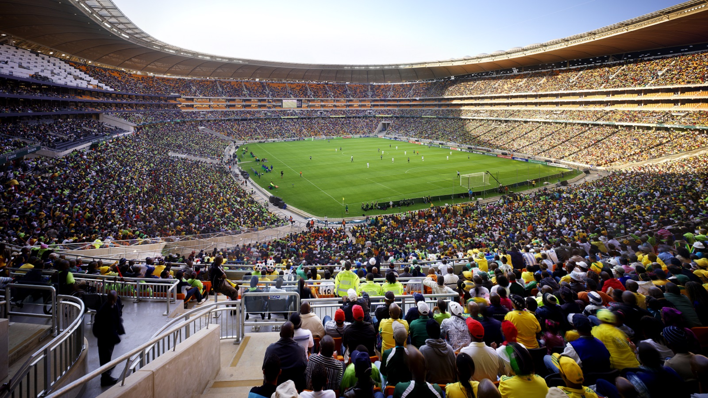
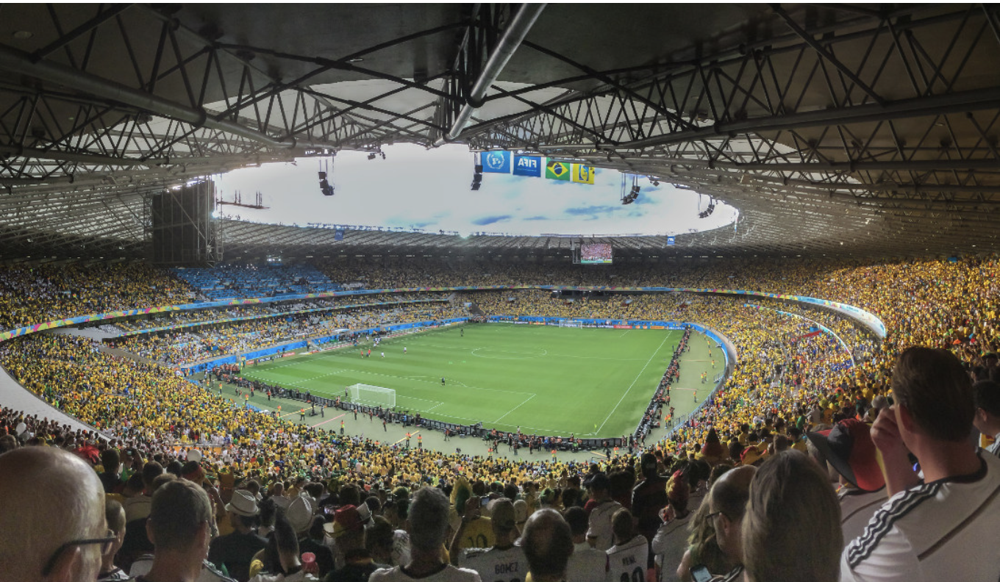

A few words about soccer and its stadiums
Football is a universal sport that brings millions of people around the world together to play or support their favorite team. Football stadiums are iconic places that symbolize the passion, excitement, and fellowship that surround the sport. These stadiums are often architectural monuments, meeting places for fans, and witnesses to historic moments in football history.
Soccer's fields around the world

Camp Nou in Barcelona, Spain

FNB Stadium of Johannesburg, South Africa
